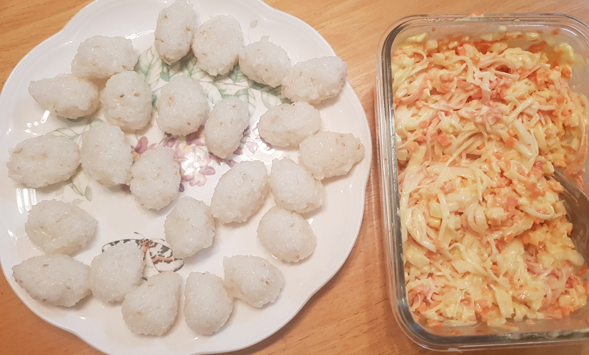

게살초밥

- 재료
게살 1팩, 양파 1/4개, 당근 조금, 머스타드 5T, 마요네즈 6T, 레몬즙 1/2T, 식초 2T, 설탕 1T, 소금 1t, 밥
- 조리순서
- 양파와 당근을 잘게 다지고, 게살은 포크를 이용해 길게 찢어둡니다.
- 마요네즈 6T, 머스타드 5T, 레몬즙 1/2T를 넣고 섞어줍니다.
만든 소스를 게살, 야채에 버무립니다.
- 식초 2T, 설탕 1T, 소금 1t를 섞은 후, 밥에 넣어서 골고루 섞습니다.
- 밥을 한입 크기로 뭉쳐놓고 위에 게살을 얹습니다. 게살초밥 완성입니다.